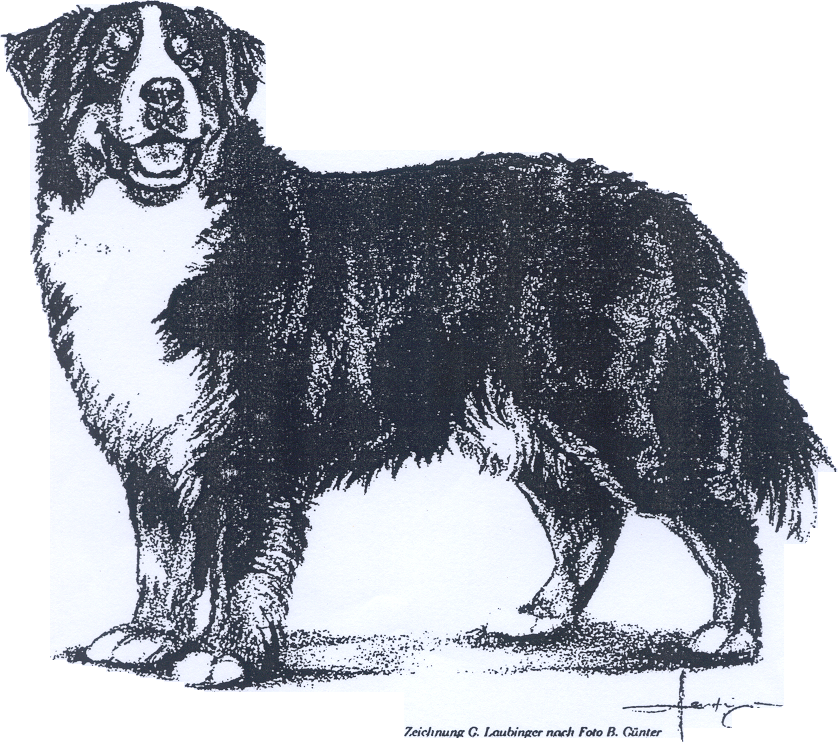

FCI-Стандарт N° 45 / 05. 05. 2003 /
БЕРНСКАЯ ГОРНАЯ СОБАКА (Бернский зенненхунд, Дюррбахлер)

ПРОИСХОЖДЕНИЕ: Швейцария.ДАТА ПУБЛИКАЦИИ ОРИГИНАЛЬНОГО ДЕЙСТВУЮЩЕГО СТАНДАРТА: 25.03.2003 г.
ПРИМЕНЕНИЕ:
Исторически использовалась как охранная, тягловая и пастушья собака на фермах в кантоне около Берна; сегодня домашняя собака и пользовательная рабочая собака.
КЛАССИФИКАЦИЯ F.C.I.:
Группа 2. Пинчеры и Шнауцеры, Молоссы, Швейцарские пастушьи собаки и другие породы).
Секция 3. Швейцарские скотогонные собаки. Без рабочих испытаний.
КРАТКОЕ ИСТОРИЧЕСКОЕ РЕЗЮМЕ:
Бернский зенненхунд - это старая фермерская собака, которая использовалась как охранная, упряжная и пастушья в приальпийских регионах около Берна. Раньше ее называли «дюррбахлер» по названию деревни и гостиницы Дюррбах, около коммуны в Швейцарии – Риггисберг, в кантоне Берн, где эти длинношерстные триколорные фермерские собаки были особенно многочисленны. В 1902, 1904 и 1907 годах представители этой породы уже демонстрировались на выставках собак, и в 1907 году несколько заводчиков региона Бургдорф решили осуществлять чистокровное разведение этих собак, для чего создали «Швейцарский Дюррбах Клуб» и определили характерные черты породы. В 1910 году, на шоу в Бургдорфе присутствовали фермеры со всего региона со своими Дюррбахлерами, всего преставив 107 собак. С того дня эта собака, переименованная в Бернскую горную собаку, стала еще одним представителем швейцарских горных пород, стремительно завоевавшим популярность по всей Швейцарии и соседней Германии. Сегодня Бернский Зенненхунд хорошо известен и ценится во всем мире как семейная собака благодаря своему поразительному трехцветному окрасу и прекрасной адаптируемости.
ОБЩИЙ ВИД:
Длинношерстная, трехцветная, сильная и подвижная рабочая собака, выше среднего роста, с крепкими конечностями, гармоничного и сбалансированного строения.
ВАЖНЫЕ ПРОПОРЦИИ:
- • Высота в холке: длина корпуса (измеренная от плечелопаточного сочленения до седалищного бугра) = 9:10, корпус скорее компактный, чем растянутый.
- • Идеальное отношение высоты в холке к глубине груди = 2:1.
ПОВЕДЕНИЕ/ТЕМПЕРАМЕНТ:
Уверенная в себе, внимательная, бдительная, бесстрашная в повседневной жизни, добродушная и преданная хозяину, уверенная и спокойная по отношению к чужим, умеренного темперамента, послушная.
ГОЛОВА:
Сильная, по размеру гармонирует с общим внешним видом, не слишком массивная.
ЧЕРЕПНАЯ ЧАСТЬ:
Череп: При осмотре спереди и в профиль - слегка округлен. Фронтальная бороздка едва заметна.
Стоп: Хорошо выражен, но не слишком резко.
ЛИЦЕВАЯ ЧАСТЬ:
Нос: Черный.
Морда: Сильная, средней длины, спинка носа прямая.
Губы: Плотно прилегающие. Черные.
Челюсти/Зубы: Крепкие, полный ножницеобразный прикус (третьи моляры - М3 в расчет не берутся). Клещеобразный прикус допустим.
Глаза: Темно-коричневые, миндалевидные, с плотно прилегающими веками. Не слишком глубоко посаженные и не выпуклые. Отвисшие веки не допустимы.
Уши: Среднего размера, высокопосаженные, плоские, треугольные по форме, слегка округлые на концах, в покое висят и плотно прилегают к голове. Когда собака насторожена, задняя часть ушей приподнимается, при этом передний край ушей остается по-прежнему прижатым к голове.
Шея:
Крепкая, мускулистая, средней длины
КОРПУС:
Линия верха: От шеи ниспадает вниз к холке гармоничной линией, затем становится прямой и прочной.
Спина: Горизонтальная, прямая, прочная.
Поясница: Широкая и сильная, при осмотре сверху - несколько уже, чем грудь.
Круп: Плавно закруглен.
Грудь: Широкая и глубокая, достигает локтей; передняя часть груди отчетливо выражена; форма ребер в разрезе – широкий овал, простирающийся как можно дальше назад.
Линия низа: Слегка приподнимается от груди к задним конечностям.
ХВОСТ:
Пышный, достигает, по крайней мере, скакательных суставов; в покое держится прямым вниз, в движении несется на уровне спины или чуть выше.
КОНЕЧНОСТИ:
ПЕРЕДНИЕ КОНЕЧНОСТИ:
При осмотре спереди - прямые и параллельные, расставлены достаточно широко.
Лопатки:
Длинные, крепкие и хорошо наклонные, формируют не слишком тупые углы с плечевыми костями, хорошо прилегают к грудной клетке, с хорошей мускулатурой.
Плечевые кости:
Длинные, наклонные.
Локти:
Плотно прижатые; не развернуты ни наружу, ни внутрь.
Предплечья:
Крепкие, прямые.
Пясти:
При осмотре сбоку - почти отвесные, прочные, при осмотре спереди - на одной линии с предплечьеми.
Передние лапы:
Небольшие, округлые, с хорошо собранными, сводистыми пальцами. Не развернуты ни внутрь, ни наружу.
ЗАДНИЕ КОНЕЧНОСТИ:
При осмотре сзади - прямые и параллельные, постав не узкий.
Бёдра:
Длинные, широкие, крепкие, с хорошей мускулатурой.
Колени:
С отчетливыми углами.
Голени:
Длинные и наклонные.
Скакательные суставы:
Прочные, с хорошими углами.
Плюсны:
Стоят почти вертикально. Прибылые пальцы должны быть удалены (кроме стран, где это запрещено законом).
Задние лапы:
Немного менее сводистые, чем передние, не развернуты ни внутрь, ни наружу.
ПОХОДКА/ДВИЖЕНИЯ:
Сильные и сбалансированные движения на всех аллюрах, с хорошим захватом пространства; свободный длинный шаг передних конечностей, хороший толчок задних; на быстрой рыси ноги движутся вперед прямолинейно.
ШЕРСТНЫЙ ПОКРОВ
ШЕРСТЬ:
Длинная, блестящая, прямая или слегка волнистая.
ОКРАС:
Основной окрас черный с яркими подпалинами на скулах, над глазами, на всех четырех ногах, и на груди, со следующими белыми отметинами:
- • Чисто белые симметричные отметины на голове: проточина идущая к носу и расширяющаяся по обе стороны морды; проточина не должна достигать подпала над глазами, белые отметины на морде не должны выходить за углы губ.
- • Умеренно широкое, цельное белое пятно на горле и груди.
- • Желательны: белые лапы, белый кончик хвоста.
- • Приемлемо: небольшое белое пятно на затылочной части шеи, небольшое белое пятно в области ануса.
РАЗМЕРЫ:
Высота в холке: для кобелей: 64-70 см,
идеальный размер: 66-68 см.
для сук: 58-66 см,
идеальный размер : 60-63 см.
НЕДОСТАТКИ/ДЕФЕКТЫ:
Любое отклонение от вышеперечисленных положений следует рассматривать как недостаток (дефект), и серьезность, с которой данный недостаток (дефект) должен быть оценен, должна пропорционально соответствовать степени его выраженности, а также его влиянию на здоровье и благополучие собаки.
- • Неуверенное поведение.
- • Беднокостность.
- • Нерядность резцов, когда прикус остается в норме.
- • Отсутствие любых других зубов кроме двух первых премоляров (Р1); отсутствие третьих моляров (М3) в расчет не принимается.
- • Шерсть:
- - отчетливо кудрявая шерсть;
- - неправильный окрас и отметины:
- - Отсутствие белого на голове.
- - Проточина слишком большая и/или белое пятно на морде выходит за углы рта.
- - Полностью белый воротник.
- - Большое белое пятно на загривке (максимальный диаметр не более 6 см).
- - Белое пятно в области ануса (более 6 см в диаметре).
- - Белые отметины на передних ногах простираются до половины пясти («сапоги»).
- - Некрасивые ассиметричные белые отметины на голове и/или груди.
- - Черные отметины и полосы в пределах белого на груди.
- - «Грязный» белый окрас (сильные пятна пигментации).
- - Черная шерсть с коричневым или рыжим оттенком.
ДИСКВАЛИФИЦИРУЮЩИЕ ПОРОКИ:
- • Агрессивность, нервозность, трусость.
- • Раздвоенная мочка носа.
- • Перекус или недокус, перекос.
- • Один или два голубых глаза (белесые глаза).
- • Энтропия, эктропия.
- • Хвост с заломом, хвост в кольце.
- • Короткая шерсть, двухслойная шерсть.
- • Иной окрас, кроме триколора.
- • Иной основной окрас, кроме черного.
Любая собака, явно демонстрирующая физические или поведенческие отклонения должна быть дисквалифицирована.
Примечание: Кобели должны иметь два нормально развитых семенника, полностью опущенных в мошонку.